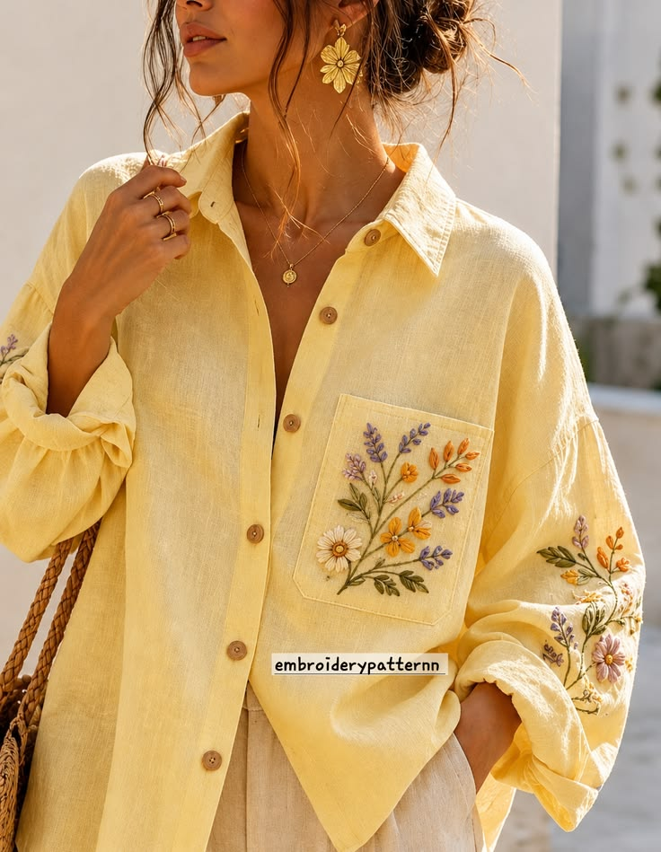
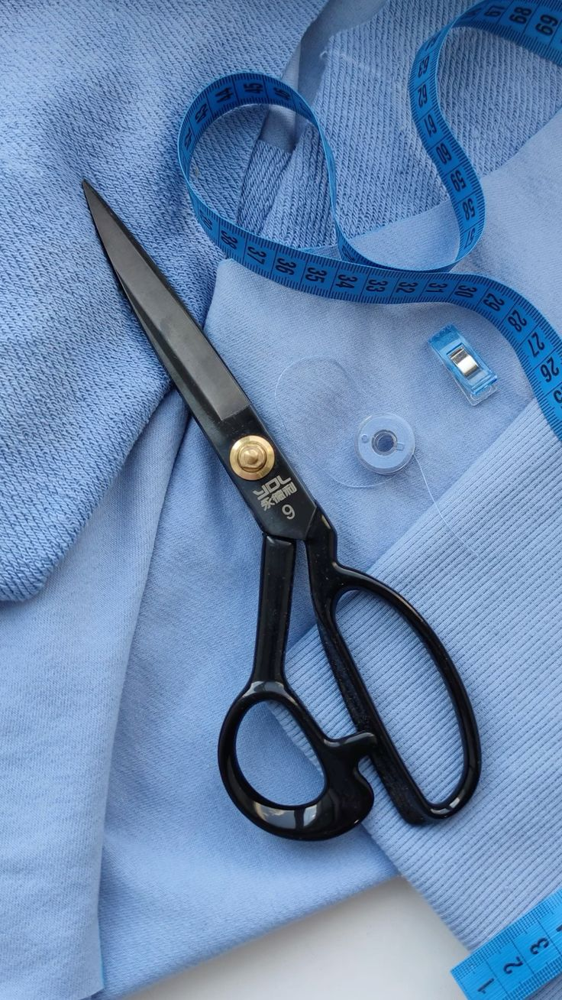

Bespoke Elegance,
Masterfully Crafted
Discover the art of true bespoke tailoring. We craft garments that fit
your body and your lifestyle with unparalleled precision and luxury.
Why Choose StitchCraft
Bespoke Fit
Every garment is precisely cut and stitched to your unique measurements for an absolutely flawless fit.
Master Craftsmanship
Our experienced tailors utilize time-honored techniques handed down through generations.
Premium Fabrics
We source only the finest fabrics from world-renowned mills across Italy and England.
Featured Tailoring Services
From the initial consultation to the final fitting, every garment we create is a testament to sartorial excellence. We source only the rarest fabrics from historic mills in Biella and Savile Row, ensuring an unparalleled drape. Our master tailors dedicate over 40 hours of hand-stitching to each suit, crafting a canvas that molds to your form. Experience a wardrobe elevated by uncompromising quality, where traditional craftsmanship meets contemporary elegance.
Bespoke Suits
Handcrafted suits tailored to perfection.

Custom Shirts
Shirts made from the finest Egyptian cotton.

Expert Alterations
Refining your existing wardrobe.
Premium Fabric Collection
The foundation of every extraordinary garment lies in the material from which it is cut. We have cultivated exclusive relationships with the most prestigious fabric mills across the globe, from the historic valleys of Biella in Italy to the revered looms of Huddersfield in England. Our curated vault houses an unparalleled selection of Super 150s wools, lightweight breath-taking cashmere, and ultra-fine Egyptian cottons. Each bolt of cloth is meticulously inspected by our master cutters for perfect drape, flawless handle, and enduring resilience. Whether you require a resilient tweed for country weekends, an ethereal linen for tropical climates, or a midnight mohair for black-tie elegance, our collection ensures that the tactile experience of your clothing matches the precision of its fit. True luxury is not just seen; it is felt against the skin every moment you wear it.

Sourced from the historic mills of Biella, our premium Italian Wool offers exceptional breathability, a flawless natural drape, and enduring resilience for the modern professional.

Cultivated along the fertile banks of the Nile, this ultra-fine cotton delivers a luxuriously soft hand feel, unmatched durability, and a crisp, pristine finish for bespoke shirting.

Ethereal and luminous, our pure mulberry silk provides a sophisticated sheen and fluid movement, perfect for exquisite evening wear and statement linings that command attention.

Spun from the rarest fibers in the Scottish Highlands, this breathtaking cashmere offers supreme warmth without the weight, enveloping you in ultimate, cloud-like luxury.
Our Tailoring Process
Consultation
Discuss your style, select fabrics, and define the garment's purpose.
Measurement
Over 30 precise measurements are taken to ensure an exacting fit.
The Fitting
Try on the basted garment where we refine the silhouette.
Delivery
Final adjustments are made, and your masterpiece is ready.
Customer Testimonials
"The bespoke suit I had made for my wedding was nothing short of perfection. The fit, the fabric, and the attention to detail are unparalleled."

James Harrison
CEO, Tech Corp
"StitchCraft transformed my wardrobe. Their alterations breathed new life into my favorite pieces. Truly master craftsmen."

Sarah Jenkins
Creative Director
"I have never worn a shirt that fits as perfectly as the custom ones I ordered here. I will be a lifelong client."

Michael Reed
Attorney at Law
Experience True Bespoke
Schedule your private consultation and fitting with our master tailors today.
Book Your Fitting